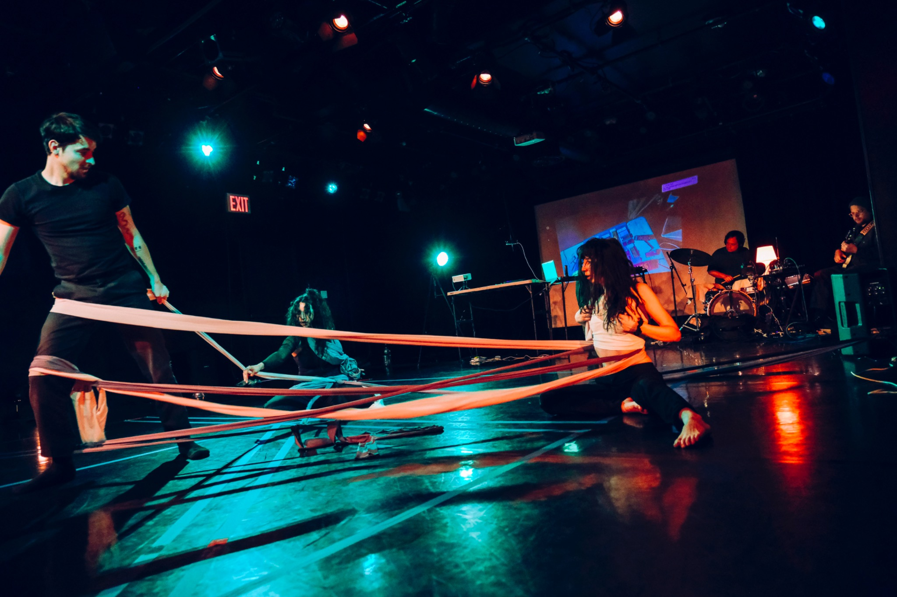

FILE / 001SCORE / GAME
QUADRANT
Merzbau's first experiment with the "game piece" compositional method. Premiered on St Mark's Pl Oct. 2021.
OPEN SCORE & DOCUMENTATION ↗ QUADRANT / DOCUMENTATION
QUADRANT / DOCUMENTATION
LIVE COMPOSITIONS, EXPERIMENTS & CHOREOGRAPHIC SYSTEMS
Merzbau's first experiment with the "game piece" compositional method. Premiered on St Mark's Pl Oct. 2021.
OPEN SCORE & DOCUMENTATION ↗QUADRANT / DOCUMENTATION
Merzbau's second experiment with the "game piece" compositional method. The structure shapes the subject, the structure shapes the body and the structure shapes what a body can do. So, we constructed a new structure.
OPEN RULES & DOCUMENTATION ↗
WEAVER / DOCUMENTATIONChoreography, percussion, reconstructed music, documentary film, and writing enter a live composition shaped by This Heat’s experimental procedures.
OPEN CURRENT WORK ↗ THIS HEAT? / DOCUMENTATION
THIS HEAT? / DOCUMENTATION
An early choreographic response to This Heat: movement as a way into the music.
OPEN PERFORMANCE FILE ↗